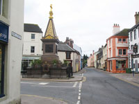
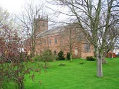
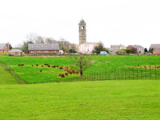

Wigton Tourist Information
   |
Wigton stands at the heart of Cumbria's Solway Plain mid-way between Carlisle, the historic regional capital of the region, and the towns and villages scattered along the wild Solway Coast. Wigton's history can be traced back to the 12th C with records of Roman Occupation, cross border raids, Chartist Riots, bear baiting and cock fighting. The present day Wigton has a variety of shops, stores, pubs, cafés and restaurants providing traditional and local fare plus a choice of holiday accommodation at prices to suit all pockets both in the town and within a few miles radius. How to get there: By rail: By road: |
Attractions in Wigton |
The George Moore Memorial Fountain
This
occupies centre stage, standing in what was the original open-air market place. It was erected by Moore as a Memorial to his wife and has additional bronze-work by the sculptor Thomas Woolmer.
St Mary's Church
The present day Saint Marys Church was built in 1788 replacing the centuries old church structure which had fallen in to a state of disrepair. Some of the old stone was used in the construction of other buildings in the town.
Ewe Close Rare Breed Farm, Arkleby
A real working farm and dairy overlooking the beautiful Solway Coast. Come and try your hand at goat milking and animal feeding. Shetland pony rides, tractor and trailer tours of the farm, indoor activities, refreshments. Open Sundays, April to October, 11am - 5.30pm.
www.eweclosefarm.co.uk
Food and Drink in Wigton |
Bryces Chippy - 17 High Street Wigton. Open Monday-Friday 11.15am-1.30pm. and 4pm-8pm. Saturday 11am-8pm. Mobile chip van calling at Kirkbampton Village Hall from 4pm-7.30pm.on Wednesdays and Grinsdale Village Hall from 4.30pm-8pm on Fridays. Party catering when we will come and fry food at your party. Visit our website www.bryceschippy.co.uk
Transportation in Wigton |
Messenger Coaches
Wide range of luxury coaches for private hire.
Weddings, Hen Nights, Stag Nights, Sports Events, School Outings and European Tours.
Phone: 016973 71111
Thomason Travel
First Class Taxi Service 24/7 availability. Fixed price to all destinations, block booking available, school runs, shopping trips, airport transfers. For reliable efficient service call 016973 44116 or 07957696248 in car mobile.